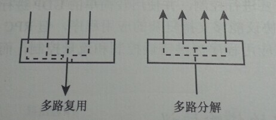
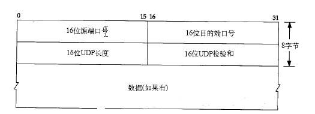
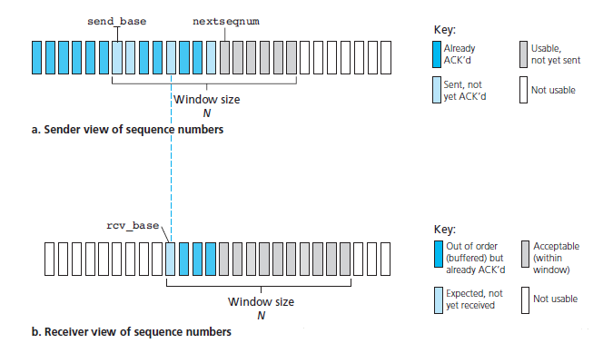
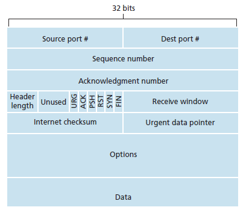
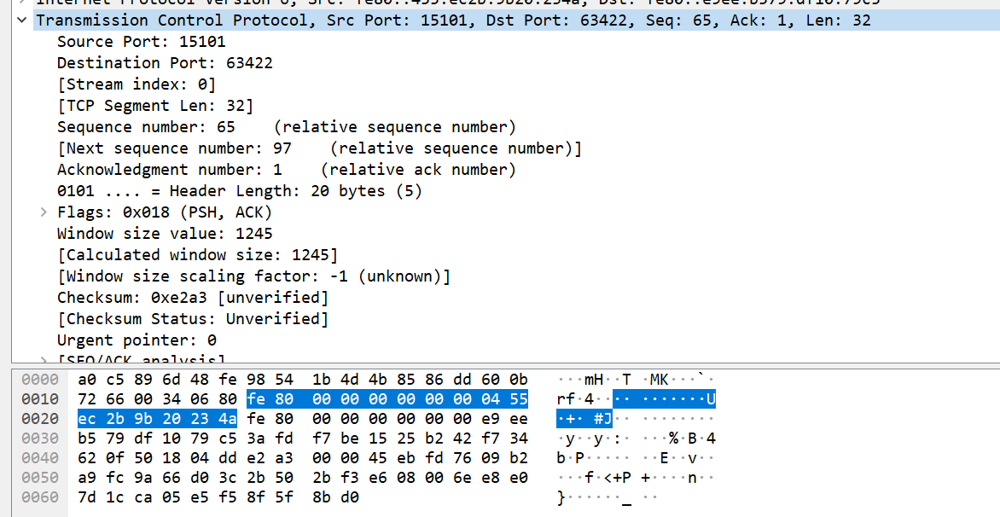
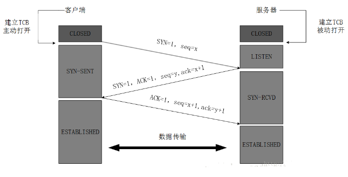
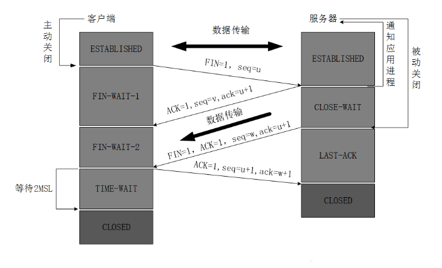
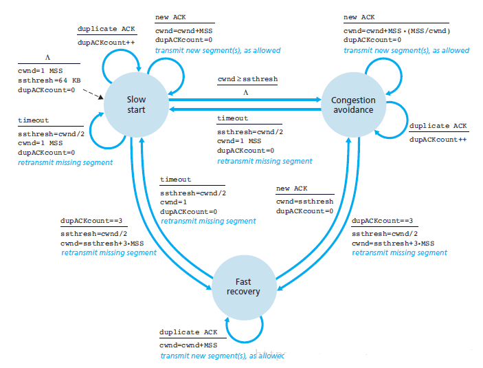

一、运输层提供的服务
运输层为运行在不同主机上的应用进程之间提供逻辑通信功能。应用进程使用运输层提供的逻辑通信功能彼此发送报文，而无需考虑承载这些报文的物理基础。、
运输层和网络层的关系：网络层提供了主机之间的逻辑通信，运输层为在不同主机上的进程之间提供了逻辑通信。运输层协议只在主机起作用，运输层能够提供的服务受制于网络层协议的服务模型。
二、多路复用和多路分解
将运输层报文段中的数据交付到正确的套接字的工作成为多路分解。源主机从不同的套接字接收数据块，并为每个数据块封装上首部信息形成报文段，并将报文段传到网络的过程叫做多路复用。

多路复用要求：（1）套接字有唯一标识符（2）每个报文段有特殊字段来指示该报文段要交付到的套接字。特殊字段是指端口号。端口号是一个16比特数，0-1023为固定端口号，如HTTP（80端口）、FTP（21端口）。
三、UDP协议（无连接运输）（8字节首部）
3.1、UDP的优势：（1）实时性较强，TCP由于其拥塞控制实时性较弱（2）无需建立连接，没有建立连接的时延，因此DNS运行在UDP上，HTTP运行在TCP上（3）无连接状态，TCP需要在端系统中维护连接状态，包括接收和发送的缓存、拥塞控制参数以及序号与确认号的参数（4）分组首部开销小。

常见应用及其运输协议：
| 应用 | 应用层协议 | 运输层协议 |
|---|---|---|
| 电子邮件 | SMTP | TCP |
| 远程终端访问 | Telnet | TCP |
| Web | HTTP | TCP |
| 文件传输 | FTP | TCP |
| 远程文件服务器 | NFS | UDP |
| 流式多媒体 | 通常专用 | UDP或TCP |
| 因特网电话 | 通常专用 | UDP或TCP |
| 网络管理 | SNMP | UDP |
| 路由选择协议 | RIP | UDP |
| 名字转换 | DNS | UDP |
3.2、UDP检验和：差错检测功能
发送方的UDP对报文段中的所有16比特字的和进行反码运算，求和时遇到的任何溢出都被回卷（溢出后加到最后一位）。然后将该结果取反码作为检验和。在接收端，如果没有出错，所有数据和检验和相加的结果为1111111111111111。可以自己抓个包，自己静下来算一下，保证爽死你。
四、可靠数据传输原理
可靠数据传输协议往往建立在不可靠IP网络层协议之上。
4.1、构造可靠数据传输协议
1、经完全可靠信道的可靠数据传输：rdt 1.0
最简答的情况，底层信号完全可靠，然而这在实际中不能实现
2、经具有比特差错信道的可靠数据传输：rdt 2.0
假设所有发送的分组都可以按其发送顺序被接收。基于重传机制的可靠数据传输协议称为自动重传请求协议（ARQ）。
ARQ协议中还需要另外三种协议功能来处理存在比特差错的情况：差错检测，接收方反馈，重传。
rdt2.0的发送端每发送一个分组需要等待接收端的确认信号，这种协议被称为停等协议。这种协议的一个关键问题是没有考虑确认信号受损的情况。解决这一问题的方法是在数据分组中添加一个新字段，让发送方对其数据分组编号，即序号的概念。此为rdt2.1。rdt2.2时在rdt2.1的基础上实现了一个没有否定确认的可靠传输协议。
3、经具有比特差错的丢包信道的可靠数据传输：rdt3.0
检测丢包的方法：倒计数定时器用于实现基于时间的重传机制。
总结可靠传输需要的技术：检验和、序号、定时器、肯定和否定确认分组。
4.2、流水线可靠数据传输协议
rdt3.0的最大缺陷在于它是一个停等协议。因此诞生流水线概念，发送端不需要等待确认信号就可以发送下一个分组。但会带来如下影响：必须增加序号范围；协议双方必须缓存多个分组；序号范围和缓存大小取决于数据传输协议如何处理丢失、损坏及延时过大的分组。有两种基本方法：回退N步和选择重传
（1）回退N步（GBN）：允许发送端发送多个分组，但在流水线中未被确认的分组数不能大于N，N被称为窗口长度，GBN协议也被称为滑动窗口协议。如果出现超时，发送方会重传所有已发送但未被确认的分组，即回退N步，从而保证接收端可以按序将数据交付给上层。
（2）选择重传（SR）：GBN中单个分组的错误会引起重传大量分组。选择重传协议通过让发送端仅重传那些它怀疑在接收方出错的分组。
SR中发送端和接收端的序列空间：

SR协议会产生接收方不能确定新到的分组是一个新的分组还是一次重传，因此要求窗口长度必须小于或等于序号空间大小的一半。
(PS：其实意思就是当我回复我收到了第五个包，根据前面的协议，我虽然说的是第五个，但是前4个包我都已经收到了，所以现在你就不必纠结于第四个包是不是丢了我收没收到，其实你可以放心直接去发第六个包，不知道合不合理，逃ε=ε=ε=┏(゜ロ゜;)┛)
五、TCP协议（面向连接的运输）（20字节首部）
TCP之所谓是面向连接的，是因为两个进程间通信前要先相互握手，且TCP提供全双工服务。TCP连接的组成包括：客户端主机上的缓存、变量和套接字，服务端上的缓存、变量和套接字。
5.1、TCP报文段结构

- 源端口和目的端口，各占两个字节；
- 序号seq，4个字节，TCP传送的字节流中每个字节都要编号；
- 确认号ack，4个字节，期望发送方下一个报文的第一个数据字节的序号；
- 2个字节的接收窗口字段，用于流量控制；
- 4比特的首部长度，通常为空；
- 可选与变长的选项字段，用于发送方和接收方协商最大报文段长度时，或在高速网络环境下用于窗口调节因子使用；
- 6比特的标志字段：紧急URG，表明此报文中有紧急数据，紧急数据的最后一个字节的指针由紧急指针指出；确认ACK，表明该报文段为已成功接收报文段的确认；PSH=1时，表明接收方应立即将数据报交给上层；复位RST，当RST=1时，表明TCP连接出现错误，必须释放连接；同步SYN，在建立连接时用来同步序号。当SYN=1，ACK=0时表明是连接请求报文；响应报文为SYN=1，ACK=1；终止FIN，用来释放连接；
序号和确认号：TCP把数据看做有序无结构的字节流，用序号对每个传输的字节进行编号。由于TCP是全双工服务，在主机A向主机B发送报文的同时A也会接收B发送的报文，确认号则是接收方希望发送方发送的下一字节的序号。例如A已收到B发送的序号为0-535的所有字节，则A会在发给B的报文段的确认号中填入536。如果A在收到536-899之前收到900-1000，则确认号仍为536，这叫TCP的累积确认。
5.2、抓包分析

5.3、可靠数据传输
TCP的定时器管理过程只使用单一的重传定时器。
首先给出TCP高度简化的描述：发送方只用超时来恢复报文段的丢失。发送方有3个与发送和重传有关的事件：（1）TCP从应用程序接收数据，并编号交给IP，若定时器未启动则启动定时器（2）超时，则重传超时的报文段，并重启定时器（3）收到确认，采用累积确认，，所以当前确认号之前的所有报文段都已被接收，若仍有未确认的报文段，重启定时器。累积确认详见书图3.36。
超时间隔加倍：TCP每次重传都会将下一次超时间隔设为当前值的两倍，而不是通过EstimatedRTT设置。这是一种简单的拥塞控制。
快速重传：超时间隔加倍会增加端到端时延。而由于接收端累积确认，在未收到期望序号报文段时会不断的发送相同的ACK确认号，此为冗余ACK。当接收端收到3个冗余ACK时，TCP就执行快速重传，在定时器过期前重传丢失的报文段。
5.4 流量控制
TCP为其应用程序提供流量控制服务以消除发送方使接收方缓存溢出的可能性。TCP的流量控制通过接收窗口来实现，用于给发送方表明接收方还有多少可用的缓存空间。接收窗口用rwnd表示，有一个情况：A向B通信，当B缓存满了的时候，他返回的报文段中rwnd=0，如果B的应用程序将缓存清空了，同时B没有数据要向A发送，则A不能知道B的缓存清空。TCP规定在rwnd=0时A继续发送一个字节数据的报文段。
5.5、三次握手，四次挥手
三次握手：

为什么是3次握手？
1、主要是为了防止已经失效的连接请求报文突然又传送到了服务器，从而产生错误连接。2、改为两次握手可能产生死锁。假设A向B发送请求，B收到请求后发送确认信号。此时如果按照两次握手协议，连接已建立，B开始传输数据。然后如果B的确认信号A没有接受到，A将不能知道B的序列号，将无法接受B的数据。而B在发送数据超时后会重复发送数据，从而死锁。

为什么要客户端要等待2MSL（报文最大生存时间）？
1、保证客户端发送的最后一个ACK报文能够到达服务器。2、如果客户端直接进入closed状态，而服务端还有数据在网络中，当有一个新连接的端口和服务端端口一样时，那么客户端会认为这些数据是新连接的。
当主机接收到一个TCP报文段，其端口号或源IP地址与该主机上进行中的套接字都不匹配，此时主机会向源发送一个特殊的重置报文段，其RST标志位置1.
六、拥塞控制
拥塞控制的方法：（1）端到端拥塞控制，网络层并没有为运输层的拥塞控制提供支持，TCP运用的方式，只能推断是否发生拥塞。（2）网络辅助的拥塞控制，路由器可以向发送端反馈网络的拥塞情况，但还未被用于TCP中。
6.1、 TCP拥塞控制（加性增、乘性减（AIMD）拥塞控制方法）
TCP采用的方法是让每一个发送方根据所感知到的网络拥塞程度来限制其能向连接发送流量的速率。
如何调整发送方的发送速率：在发送方跟踪一个变量，即拥塞窗口（cwnd），其对一个TCP发送方能向网络中发送流量的速率进行了限制（发送方中未被确认的数据量不超过cwnd和rwnd的最小值）。
如何感知拥塞：通过出现超时或3次冗余ACK来确认是否发生拥塞。
TCP发送方能够以更高的速率发送而不会使网络拥塞，有三个原则：（1）一个丢失的报文段意味拥塞，此时应降低TCP发送方速率（减小cwnd的大小）。（2）一个确认报文段指示网络正在向接收方交付发送方的报文段，此时可以增加发送方的速率。（3）带宽探测
6.2、TCP拥塞控制算法：慢启动，拥塞避免，快速恢复
（1）慢启动
当TCP连接开始时，cwnd的值置为1个MSS（最大报文段长度），每当传输的报文段首次被确认就增加1个MSS，因此cwnd以指数增长。
指数增长的结束方案：（1）如果出现超时的丢包事件，将慢启动阈值ssthresh置为cwnd/2，并将cwnd重新置为1并重新开始慢启动。（2）当新的cwnd增长到超过ssthresh时，结束慢启动进入拥塞避免模式。（3）如果检测到3个冗余ACK则进入快速恢复状态。
（2）拥塞避免
每个RTT（往返时间）只增加一个MSS。假设当前MSS为1460字节而cwnd为14600字节，则一个RTT发送10个报文段，每到达一个ACK增加MSS/10的拥塞窗口长度，当收到10个报文段的所有ACK时增则会增加1个MSS。
当出现超时时，将ssthresh置为cwnd/2，同时将cwnd置为1，开始慢启动。当出现3次冗余ACK时，表示当前网络仍可以交付，TCP将ssthresh置为cwnd/2，同时cwnd=cwnd/2+3MSS，并进入快速恢复。
（3）快速恢复
在快速恢复中，对于引起TCP进入快速恢复状态的缺失报文段，每收到一个它的冗余ACK就将cwnd增加一个MSS。当收到丢失报文段的ACK时，cwnd=ssthresh，并进入拥塞避免。如果在这个阶段超时，同样进入慢启动。

公平性：在K条TCP连接经过传输速率为R的链路时，如果每条连接的平均传输速率接近R/K，则认为该拥塞控制是公平的。在每条TCP连接的RTT相等的情况下，上述TCP拥塞控制是公平的（详见图3.56），但实际中RTT小的连接会有更高的吞吐量。